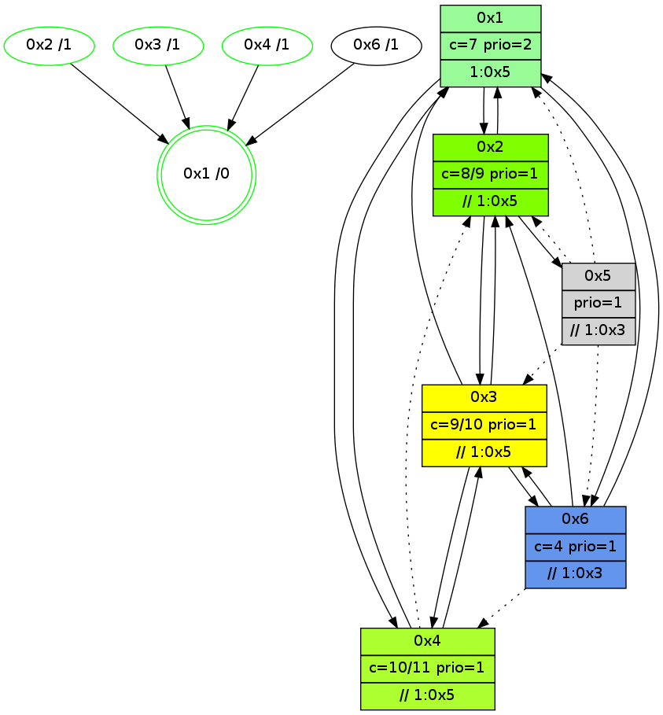

>> << IDX [start] -100 -25 -5 +0 +5 +25 +100 [915.008694172]
 Previous packets
----------------------------------------------------------------------
910.057646 beacon01(adaf) #0 coord=01,02,05,03,04,06 cycle=432.0ms assoc
-- color-indic=1 64 b4 0c
910.067608 beacon02(adaf) #0 coord=01,02,05,03,04,06 cycle=432.0ms assoc 64 e5 f3
910.077607 beacon05(adaf) #0 coord=01,02,05,03,04,06 cycle=432.0ms assoc 64 43 d9
910.087608 beacon03(adaf) #0 coord=01,02,05,03,04,06 cycle=432.0ms assoc 64 df fd
910.097609 beacon04(adaf) #0 coord=01,02,05,03,04,06 cycle=432.0ms assoc 64 79 d7
910.107608 beacon06(adaf) #0 coord=01,02,05,03,04,06 cycle=432.0ms assoc 64 0d cb
910.119503 [Hello(6): seq=628 sym=2,1,3 sysInfo=hasWarning stat=2:7,8,3,1/1:10,9,9,1/3:11,12,2,1]
910.121390 [Hello(3): seq=713 sym=6,4,1,2 sysInfo=hasWarning stat=6:15,11,10,2/4:0,0,0,0/1:9,11,4,1/2:7,4,4,1]
910.123616 [STC(4)->1 #0.110 new-neigh,tree-change,inconsistent-stability,stable,to-color d=1]
910.125710 [STC(2)->1 #0.110 new-neigh,tree-change,inconsistent-stability,stable,to-color d=1]
910.127889 [STC(6)->1 #0.110 new-neigh,tree-change,inconsistent-stability,to-color d=1]
910.129739 [Color(1) seq=141 @0:0 color=7 prio=2 >1.@5 >>1.@4 c=1,4,6,8,9;0,2,3,5]
910.135804 [STC(3)->1 #0.110 new-neigh,tree-change,inconsistent-stability,stable,to-color d=1]
910.137522 [Color(2) seq=113 @0:0 color=8/9 prio=1 >>1.@4,1.@5 c=4,7,9;0,1,2,5,6]
910.143018 [Color(3) seq=99 @0:0 color=9/10 prio=1 >>1.@5 c=4,7,8,a;0,1,2,5,6]
910.144839 [Color(4) seq=81 @0:0 color=10/11 prio=1 >>1.@5 c=7,9;1,4,6,8]
----------------------------------------------------------------------
910.549755 beacon01(adaf) #0 coord=01,02,05,03,04,06 cycle=432.0ms assoc
-- color-indic=1 64 f8 bc
910.559716 beacon02(adaf) #0 coord=01,02,05,03,04,06 cycle=432.0ms assoc 64 a9 43
910.569716 beacon05(adaf) #0 coord=01,02,05,03,04,06 cycle=432.0ms assoc 64 0f 69
910.579717 beacon03(adaf) #0 coord=01,02,05,03,04,06 cycle=432.0ms assoc 64 93 4d
910.589716 beacon04(adaf) #0 coord=01,02,05,03,04,06 cycle=432.0ms assoc 64 35 67
910.599717 beacon06(adaf) #0 coord=01,02,05,03,04,06 cycle=432.0ms assoc 64 41 7b
910.611440 PARSE ERROR************************
Traceback (most recent call last):
File "PacketAnalysis.py", line 167, in showOperaPacket
structPacket = OperaPacketParse.parsePacket(rawPacket)
File "../../pkg-python/HipSens/Core/OperaPacketParse.py", line 461, in parsePacket
return parseHelloMessage(data)
File "../../pkg-python/HipSens/Core/OperaPacketParse.py", line 109, in parseHelloMessage
sysInfo,stability,colorInfo = struct.unpack("!HBB", linkList[0:4])
error: unpack requires a string argument of length 4
48 1c 04 00 02 cc 00 02 02 06 02 00 01 00 03 00 53 04 00 02 00 00 4c 06 00 43 0c 3a 46 dc 53 2c
910.615477 [Hello(1): seq=615 sym=2,6 sysInfo=hasWarning,coloring-mode-on,ColoringModeRequestCalled stat=2:0,13,5,2/6:2,0,3,1]
----------------------------------------------------------------------
911.041863 beacon01(adaf) #0 coord=01,02,05,03,04,06 cycle=432.0ms assoc
-- color-indic=1 64 3c d3
911.051824 beacon02(adaf) #0 coord=01,02,05,03,04,06 cycle=432.0ms assoc 64 6d 2c
911.061825 beacon05(adaf) #0 coord=01,02,05,03,04,06 cycle=432.0ms assoc 64 cb 06
911.071825 beacon03(adaf) #0 coord=01,02,05,03,04,06 cycle=432.0ms assoc 64 57 22
911.081824 beacon04(adaf) #0 coord=01,02,05,03,04,06 cycle=432.0ms assoc 64 f1 08
911.091826 beacon06(adaf) #0 coord=01,02,05,03,04,06 cycle=432.0ms assoc 64 85 14
911.103519 [Hello(6): seq=629 sym=2,1,3 sysInfo=hasWarning stat=2:7,9,3,1/1:11,10,9,1/3:11,13,3,1]
911.106051 [Hello(3): seq=714 sym=6,4,1,2 sysInfo=hasWarning stat=6:15,11,10,2/4:0,1,0,0/1:10,11,4,1/2:7,4,4,1]
911.107888 [Color(2) seq=114 @0:0 color=8/9 prio=1 >>1.@5 c=4,7,9;0,1,2,5,6,a]
911.112973 [Color(4) seq=82 @0:0 color=10/11 prio=1 >>1.@5 c=7,9;1,4,6,8]
----------------------------------------------------------------------
911.533972 beacon01(adaf) #0 coord=01,02,05,03,04,06 cycle=432.0ms assoc
-- color-indic=1 64 62 b2
911.543933 beacon02(adaf) #0 coord=01,02,05,03,04,06 cycle=432.0ms assoc 64 33 4d
911.553933 beacon05(adaf) #0 coord=01,02,05,03,04,06 cycle=432.0ms assoc 64 95 67
911.563936 beacon03(adaf) #0 coord=01,02,05,03,04,06 cycle=432.0ms assoc 64 09 43
911.573933 beacon04(adaf) #0 coord=01,02,05,03,04,06 cycle=432.0ms assoc 64 af 69
911.583934 beacon06(adaf) #0 coord=01,02,05,03,04,06 cycle=432.0ms assoc 64 db 75
911.595692 [Hello(4): seq=717 sym=2,3 asym=1 sysInfo=hasWarning stat=2:3,4,0,0/3:12,13,6,4/1:11,3,12,0]
911.605924 [Hello(1): seq=616 sym=2,6 sysInfo=hasWarning,coloring-mode-on,ColoringModeRequestCalled stat=2:0,13,5,2/6:2,0,3,1]
----------------------------------------------------------------------
912.026079 beacon01(adaf) #0 coord=01,02,05,03,04,06 cycle=432.0ms assoc
-- color-indic=1 64 a6 dd
912.036040 beacon02(adaf) #0 coord=01,02,05,03,04,06 cycle=432.0ms assoc 64 f7 22
912.046041 beacon05(adaf) #0 coord=01,02,05,03,04,06 cycle=432.0ms assoc 64 51 08
912.056042 beacon03(adaf) #0 coord=01,02,05,03,04,06 cycle=432.0ms assoc 64 cd 2c
912.066042 beacon04(adaf) #0 coord=01,02,05,03,04,06 cycle=432.0ms assoc 64 6b 06
912.076041 beacon06(adaf) #0 coord=01,02,05,03,04,06 cycle=432.0ms assoc 64 1f 1a
912.087722 [Hello(6): seq=630 sym=2,1,3 sysInfo=hasWarning stat=2:8,10,3,1/1:12,10,9,1/3:12,14,3,1]
912.090250 [Hello(3): seq=715 sym=6,4,1,2 sysInfo=hasWarning stat=6:0,11,10,2/4:0,2,0,0/1:11,11,4,1/2:7,4,4,1]
912.092139 [Color(2) seq=115 @0:0 color=8/9 prio=1 >>1.@5 c=4,7,9;0,1,2,5,6,a]
912.095123 [Color(3) seq=101 @0:0 color=9/10 prio=1 >>1.@5 c=4,7,8,a;0,1,2,5,6]
912.097171 [Color(4) seq=83 @0:0 color=10/11 prio=1 >>1.@5 c=7,9;1,4,6,8]
912.099104 [STC(1) #0.111 new-neigh,tree-change,inconsistent-stability,stable,to-color d=0]
912.101712 [Color(1) seq=143 @0:0 color=7 prio=2 >1.@5 c=1,4,6,8,9;0,2,3,5,a]
----------------------------------------------------------------------
912.518188 beacon01(adaf) #0 coord=01,02,05,03,04,06 cycle=432.0ms assoc
-- color-indic=1 64 ea 6d
912.528151 beacon02(adaf) #0 coord=01,02,05,03,04,06 cycle=432.0ms assoc 64 bb 92
912.538149 beacon05(adaf) #0 coord=01,02,05,03,04,06 cycle=432.0ms assoc 64 1d b8
912.548149 beacon03(adaf) #0 coord=01,02,05,03,04,06 cycle=432.0ms assoc 64 81 9c
912.558149 beacon04(adaf) #0 coord=01,02,05,03,04,06 cycle=432.0ms assoc 64 27 b6
912.568151 beacon06(adaf) #0 coord=01,02,05,03,04,06 cycle=432.0ms assoc 64 53 aa
912.579712 [STC(6)->1 #0.111 new-neigh,tree-change,inconsistent-stability,to-color d=1]
912.581040 [Hello(1): seq=617 sym=2,6 sysInfo=hasWarning,coloring-mode-on,ColoringModeRequestCalled stat=2:0,13,5,2/6:3,0,3,1]
912.583425 [STC(3)->1 #0.111 new-neigh,tree-change,inconsistent-stability,stable,to-color d=1]
912.585293 [Hello(4): seq=718 sym=3 asym=1 sysInfo=hasWarning stat=3:12,13,6,4/1:12,4,13,0]
912.589177 [Hello(2): seq=1206 sym=5,1,3 sysInfo=hasWarning stat=5:0,0,0,0/1:1,13,6,0/3:2,5,8,2]
912.591882 [STC(2)->1 #0.111 new-neigh,tree-change,inconsistent-stability,stable,to-color d=1]
----------------------------------------------------------------------
913.010295 beacon01(adaf) #0 coord=01,02,05,03,04,06 cycle=432.0ms assoc
-- color-indic=1 64 2e 02
913.020258 beacon02(adaf) #0 coord=01,02,05,03,04,06 cycle=432.0ms assoc 64 7f fd
913.030256 beacon05(adaf) #0 coord=01,02,05,03,04,06 cycle=432.0ms assoc 64 d9 d7
913.040257 beacon03(adaf) #0 coord=01,02,05,03,04,06 cycle=432.0ms assoc 64 45 f3
913.050257 beacon04(adaf) #0 coord=01,02,05,03,04,06 cycle=432.0ms assoc 64 e3 d9
913.060257 beacon06(adaf) #0 coord=01,02,05,03,04,06 cycle=432.0ms assoc 64 97 c5
913.071970 [Hello(6): seq=631 sym=2,1,3 asym=4 sysInfo=hasWarning stat=2:9,11,4,1/1:13,11,10,1/3:13,15,4,1/4:0,0,0,0]
913.074710 [Hello(3): seq=716 sym=6,4,1,2 sysInfo=hasWarning stat=6:1,11,10,2/4:1,3,0,0/1:11,12,5,1/2:8,4,5,1]
913.077783 [Color(4) seq=84 @0:0 color=10/11 prio=1 >>1.@5 c=7,9;1,4,6,8]
913.079570 [Color(3) seq=102 @0:0 color=9/10 prio=1 >>1.@5 c=4,7,8,a;0,1,2,5,6]
913.081738 [Color(2) seq=116 @0:0 color=8/9 prio=1 >>1.@5 c=4,7,9;0,1,2,5,6,a]
913.085002 [Color(1) seq=144 @0:0 color=7 prio=2 >1.@5 c=1,4,6,8,9;0,2,3,5,a]
----------------------------------------------------------------------
913.502406 beacon01(adaf) #0 coord=01,02,05,03,04,06 cycle=432.0ms assoc
-- color-indic=1 64 63 05
913.512366 beacon02(adaf) #0 coord=01,02,05,03,04,06 cycle=432.0ms assoc 64 32 fa
913.522366 beacon05(adaf) #0 coord=01,02,05,03,04,06 cycle=432.0ms assoc 64 94 d0
913.532368 beacon03(adaf) #0 coord=01,02,05,03,04,06 cycle=432.0ms assoc 64 08 f4
913.542367 beacon04(adaf) #0 coord=01,02,05,03,04,06 cycle=432.0ms assoc 64 ae de
913.552369 beacon06(adaf) #0 coord=01,02,05,03,04,06 cycle=432.0ms assoc 64 da c2
913.564108 [Hello(4): seq=719 sym=3 asym=2,1 sysInfo=hasWarning stat=3:12,14,6,4/2:0,1,1,0/1:12,5,13,0]
913.567632 [Hello(1): seq=618 sym=2,4,6 sysInfo=hasWarning,coloring-mode-on,ColoringModeRequestCalled stat=2:1,13,6,2/4:0,0,0,0/6:3,0,3,1]
----------------------------------------------------------------------
913.994513 beacon01(adaf) #0 coord=01,02,05,03,04,06 cycle=432.0ms assoc
-- color-indic=1 64 a7 6a
914.004473 beacon02(adaf) #0 coord=01,02,05,03,04,06 cycle=432.0ms assoc 64 f6 95
914.014475 beacon05(adaf) #0 coord=01,02,05,03,04,06 cycle=432.0ms assoc 64 50 bf
914.024475 beacon03(adaf) #0 coord=01,02,05,03,04,06 cycle=432.0ms assoc 64 cc 9b
914.034476 beacon04(adaf) #0 coord=01,02,05,03,04,06 cycle=432.0ms assoc 64 6a b1
914.044477 beacon06(adaf) #0 coord=01,02,05,03,04,06 cycle=432.0ms assoc 64 1e ad
914.056189 [Hello(6): seq=632 sym=2,1,3 asym=4 sysInfo=hasWarning stat=2:10,12,4,1/1:14,12,10,1/3:14,0,4,1/4:0,1,0,0]
914.058939 [Hello(3): seq=717 sym=6,4,1,2 sysInfo=hasWarning stat=6:2,11,10,2/4:1,3,0,0/1:12,13,5,1/2:8,5,5,1]
914.062028 [Color(4) seq=85 @0:0 color=10/11 prio=1 >>1.@5 c=7,9;1,4,6,8]
914.063829 [Color(3) seq=103 @0:0 color=9/10 prio=1 >>1.@5 c=4,7,8,a;0,1,2,5,6]
914.065687 [Color(1) seq=145 @0:0 color=7 prio=2 >1.@5 c=1,4,6,8,9;0,2,3,5,a]
914.071865 [Color(2) seq=117 @0:0 color=8/9 prio=1 >>1.@5 c=4,7,9;0,1,2,5,6,a]
----------------------------------------------------------------------
914.486621 beacon01(adaf) #0 coord=01,02,05,03,04,06 cycle=432.0ms assoc
-- color-indic=1 64 eb da
914.496581 beacon02(adaf) #0 coord=01,02,05,03,04,06 cycle=432.0ms assoc 64 ba 25
914.506582 beacon05(adaf) #0 coord=01,02,05,03,04,06 cycle=432.0ms assoc 64 1c 0f
914.516582 beacon03(adaf) #0 coord=01,02,05,03,04,06 cycle=432.0ms assoc 64 80 2b
914.526584 beacon04(adaf) #0 coord=01,02,05,03,04,06 cycle=432.0ms assoc 64 26 01
914.536582 beacon06(adaf) #0 coord=01,02,05,03,04,06 cycle=432.0ms assoc 64 52 1d
914.548330 [Hello(4): seq=720 sym=1,3 asym=2 sysInfo=hasWarning stat=1:13,6,13,0/3:12,15,6,4/2:0,2,1,0]
914.552174 [Hello(1): seq=619 sym=2,4,6 sysInfo=hasWarning,coloring-mode-on,ColoringModeRequestCalled stat=2:1,14,6,2/4:0,0,0,0/6:3,0,3,1]
914.554241 [STC(1) #0.112 new-neigh,tree-change,inconsistent-stability,stable,to-color d=0]
----------------------------------------------------------------------
914.978732 beacon01(adaf) #0 coord=01,02,05,03,04,06 cycle=432.0ms assoc
-- color-indic=1 64 2f b5
914.988693 beacon02(adaf) #0 coord=01,02,05,03,04,06 cycle=432.0ms assoc 64 7e 4a
914.998694 beacon05(adaf) #0 coord=01,02,05,03,04,06 cycle=432.0ms assoc 64 d8 60